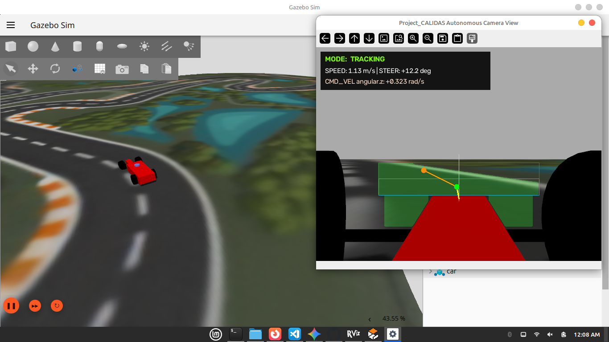

FLAGSHIP SIMULATION
Nov 2026
Project CALIDAS — Camera LiDAR Depth Autonomous System

LAUNCH: ros2 launch Project_CALIDAS track.launch.py Ackermann · 640×480 RGB
System Architecture & Goal
End-to-end virtual autonomy testbed in ROS 2 Jazzy and Gazebo Harmonic evaluating monocular vision, 360° LiDAR SLAM, and rotating depth-camera 3D mapping across custom Ackermann and differential-drive URDF/Xacro platforms.
CA // 2D Track Camera-Guided Car Decisions
- ▸ HSV Colour Filtering & Self-Occlusion Masking: Isolates dark-grey asphalt and white lane markings in HSV space while masking out the car's own red nose and front wheels from the 640×480 frame.
- ▸ Connected-Component Locking: Locks onto the active road ribbon closest to the front axle to reject distant circuit loops visible across grass and water hazards.
- ▸ Near/Far Lookahead PD Steering: Combines near and far band centroids to gauge upcoming curvature, modulating speed between 0.70 and 1.65 m/s around the 40 m × 40 m circuit.
ROS 2 Jazzy
Gazebo Harmonic
OpenCV
SLAM Toolbox
RTAB-Map
URDF/Xacro
Python